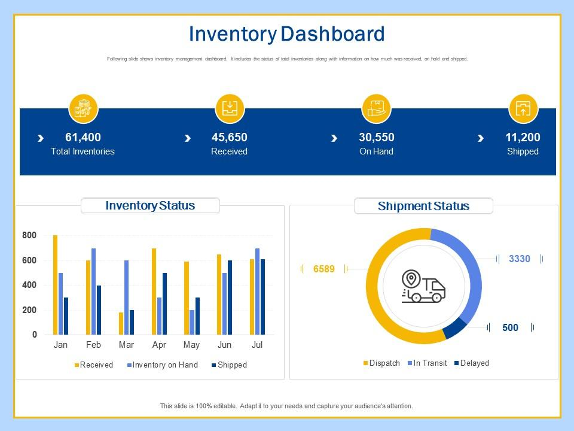

I am a computer science professional with expertise in software development, data analysis, and problem-solving. With over 10 years of experience, I specialize in building scalable applications and optimizing systems for performance. Passionate about staying ahead of technological advancements, I enjoy exploring new programming languages, algorithms, and AI innovations. I’m always eager to collaborate on projects that drive efficiency and innovation in the tech space.
| Company | Position | Duration |
|---|---|---|
| Tech Solutions Inc | Senior Software Engineer | 2015 - Present |
| Innovatech | Software Developer | 2010 - 2015 |
| Institution | Degree | Duration |
|---|---|---|
| Northern Arizona University | Master of Science in Computer Science | 2020 – 2022 |
| University of California, Berkeley | Bachelor of Science in Computer Science | 2015 – 2019 |

Description: Developed a web-based application for automating inventory tracking and optimizing stock levels using Python and Django. Integrated a real-time dashboard for analytics.
Technologies Used: Python, Django, MySQL, JavaScript
Email: thomas@example.com
Phone: +1 234-567-890
GitHub: https://github.com/yourusername